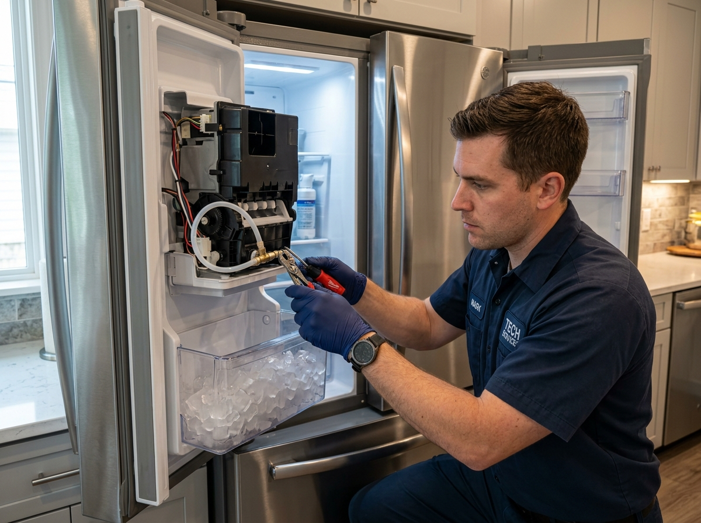

LG French Door Refrigerator Repair in Littleton, CO

If your LG French door refrigerator stopped cooling, the ice maker quit making ice, or water is pooling under the crisper drawers, you are not alone. LG French door refrigerators are popular across Littleton, but their ice makers, water dispensers, and Linear compressors develop the same handful of problems year after year. This guide covers the most common LG French door refrigerator problems, the quick checks you can safely do yourself, and when to call for LG French door refrigerator repair in Littleton, CO — our technicians offer same-day service, upfront pricing, and a 90-day parts and labor warranty.
Most standard repairs fall in the $180–$450 range, and the diagnostic fee is credited toward the repair when you approve the work. If the fridge is not cooling at all, skip the DIY checks and call (720) 473-5289 — every hour without cooling risks a full fridge of food.
Common LG French Door Refrigerator Problems
These are the LG French door refrigerator problems we see most often in Littleton homes. If your symptom is on this list, the fix is usually a single part and a single visit:
- Ice maker not making ice — the number one LG complaint. Usually a frozen fill tube, a failed water inlet valve, or a worn-out ice maker assembly.
- Fridge not cooling, freezer fine — usually a fan, damper, or defrost problem. See our guide to a refrigerator not cooling.
- Fridge and freezer both warm — often a start relay, control board, or compressor issue. Call promptly — food safety is at stake.
- Water leaking inside or underneath — a clogged defrost drain, a cracked water line, or a faulty water inlet valve.
- Loud humming, clicking, or buzzing — evaporator or condenser fan motors, or a struggling compressor.
- Frost buildup in the freezer — a torn door gasket or a failed defrost heater or sensor.
- Water dispenser not working — a frozen water line, a clogged filter, or a faulty dispenser switch.
- Temperature display flashing or wrong — a faulty thermistor or control board.
LG French Door Refrigerator Ice Maker Repair
This section explains how to fix ice maker LG French door refrigerator problems, step by step. About half of all ice maker calls are solved by one of these checks:
- Make sure the ice maker is switched on. The switch is usually on the ice maker itself or in the settings menu. It is easy to bump off while loading groceries.
- Check the water supply. Make sure the shut-off valve behind the fridge is fully open and the water line is not kinked or pinched.
- Look for a frozen fill tube. If the tube that fills the ice tray is blocked with ice, let it thaw. Never chip at it with a sharp object.
- Press the ice maker test button. Most LG models have a small test button under the ice maker. Hold it until the tray cycles. If it cycles but makes no ice, the problem is the water supply or the inlet valve.
- Replace the water filter. A clogged filter starves the ice maker. LG recommends replacing the filter every 6 months.
If you tried these checks and the ice maker still will not make ice, the cause is usually a failed water inlet valve, a worn-out ice maker assembly, or a control board fault. That is when you need LG French door refrigerator ice maker repair — our technicians test the valve, the ice maker motor, and the fill tube on the first visit, and most ice maker repairs are finished the same day. We repair the LG French door refrigerator ice maker on standard French door models as well as models with Craft Ice and dual ice makers. If your ice maker problem is part of a wider cooling failure, see our ice maker repair page for the full diagnostic process.
LG French Door Refrigerator Not Cooling?
A warm fridge has a short list of causes. Check these first:
- Temperature setting — confirm the fridge is set to 37°F and the freezer to 0°F (see below).
- Dirty condenser coils — dust-covered coils cannot release heat. They sit behind or under the fridge; see our refrigerator maintenance checklist for safe cleaning steps.
- Blocked air vents — food packed against the vents stops cold air circulating.
- Door gasket — a torn or loose seal lets warm, humid air in non-stop. We repair refrigerator door seals and gaskets on LG French door models.
If both sections are warm, or the compressor is silent or clicking on and off, stop and call a technician — that points to a start relay, control board, or compressor problem, not a setting.
LG French Door Refrigerator Temperature Setting
The correct LG French door refrigerator temperature setting is 37°F (3°C) for the fresh food section and 0°F (-18°C) for the freezer. After changing a setting, wait a full 24 hours before judging the result — the fridge needs time to stabilize.
If the temperature keeps drifting, or the display disagrees with a thermometer placed inside the fridge, the cause is usually a faulty thermistor, a control board fault, or a sealed-system problem. Do not keep turning the dial colder — that will not fix a failing part, and it can freeze food in the fresh food section.
How Much Does LG French Door Refrigerator Repair Cost in Littleton?
Most standard LG repairs in Littleton cost $180–$450, including parts and labor. You get an upfront quote before any work starts, and the diagnostic fee is credited toward the repair when you approve it. Compressor and sealed-system jobs can run $350–$750. Every repair is covered by our 90-day parts and labor warranty.
One more thing worth knowing: many LG models carry a 5–10 year manufacturer warranty on the compressor part itself, so you may only pay for labor. We check your model and warranty status during the visit. If you are weighing repair against a new fridge, our repair vs. replace guide walks through the 50% rule.
Frequently Asked Questions
Why is my LG French door refrigerator ice maker not working?
The most common causes are a frozen fill tube, the water supply turned off, a clogged water filter, or a failed water inlet valve. Press the ice maker test button and check the water supply first. If it still makes no ice, the inlet valve or ice maker assembly usually needs replacing.
How do I fix ice maker LG French door refrigerator problems?
Start with the water supply, the ice maker on/off switch, the test button, and the water filter. If those checks do not help, the problem is usually the water inlet valve or the ice maker assembly, which a technician can test and replace on the first visit.
What is the correct temperature setting for an LG French Door refrigerator?
Set the fresh food section to 37°F (3°C) and the freezer to 0°F (-18°C). Wait a full 24 hours after changing a setting before judging the result. If the temperature keeps drifting, the thermistor, control board, or sealed system may be at fault.
Should I repair or replace my LG French door refrigerator?
If the fridge is under 10 to 13 years old and the repair costs less than half the price of a comparable new model, repair is usually the better choice. Many LG models also carry a 5 to 10 year manufacturer warranty on the compressor part, so you may only pay for labor.
Get Your LG Fixed Today in Littleton
LG French door refrigerator acting up? Our Littleton technicians diagnose it the same day, quote you upfront, and back every repair with a 90-day parts and labor warranty.
Speak With a Technician Today